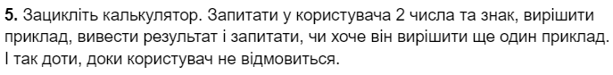

Завдання 1.
Виконання завдання знаходиться тут.
Завдання 2.
Виконання завдання знаходиться тут.
Завдання 3.
Виконання завдання знаходиться тут.
Завдання 4.
Виконання завдання знаходиться тут.
Завдання 5.
Виконання завдання знаходиться тут.
Завдання 6.
Виконання завдання знаходиться тут.
Завдання 7.
Виконання завдання знаходиться тут.